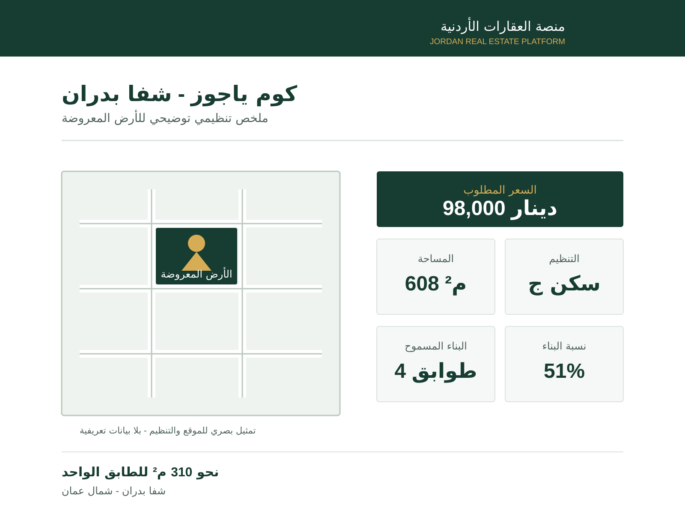

أرض سكن ج · 608 م² · شمال عمان
قطعة أرض كوم ياجوز — شفا بدران
قطعة بمساحة 608 م² في كوم ياجوز، بتنظيم سكن ج يسمح بأربعة طوابق ونسبة إشغال 51% — أي نحو 310 م² مسطح بناء للطابق الواحد.
نحو 161 ديناراً للمتر المربع · فرصة سكنية في شفا بدران.
نظرة سريعة
ملخص تنظيم الأرض
لوحة توضيحية لأهم بيانات المساحة والتنظيم والبناء للمشروع.

فرصة سكنية قابلة للتطوير
مساحة مناسبة لمشروع إسكان
تعتمد تفاصيل التنظيم المعروضة على الوثائق الرسمية المتوفرة للمشروع، لتكون المساحة وأحكام البناء واضحة عند المقارنة والتخطيط.
وبمساحة 608 م² تتجاوز القطعة الحد الأدنى للإفراز (500 م²)، وبنسبة إشغال 51% يكون مسطح البناء نحو 310 م² للطابق الواحد — وبأربعة طوابق نحو 1,240 م² إجمالي مسطح مسموح. هذه الأرقام هي ما يجعل الحديث عن مشروع إسكان قابلاً للحساب لا مجرد وصف.
- منطقة كوم ياجوز · شفا بدران · حي الكوم الغربي.
- محافظة العاصمة · مديرية أراضي شمال عمان.
- تتجاوز الحد الأدنى لمساحة الإفراز المقرر لسكن ج (500 م²).
- أربعة طوابق مسموحة بارتفاع 16 متراً — أحكام تسمح بمشروع إسكان.
أحكام البناء — سكن ج
تفاصيل التنظيم والبناء المعروضة للأرض.
- مساحة القطعة
- 608 م² (محسوبة)
- الاستعمال
- سكن ج
- النسبة المئوية
- 51%
- عدد الأدوار
- 4
- ارتفاع البناء
- 16 م
- الارتداد الأمامي
- 4 م
- الارتداد الجانبي
- 3 م
- الارتداد الخلفي
- 4 م
- الحد الأدنى للواجهة الأمامية
- 18 م
- الحد الأدنى لمساحة الإفراز
- 500 م²
- مسطح البناء للطابق
- ≈ 310 م² (حسابنا)
- إجمالي المسطح المسموح
- ≈ 1,240 م² (حسابنا)
- سعر المتر
- ≈ 161 د.أ (حسابنا)
الموقع
كوم ياجوز، شفا بدران
كوم ياجوز ضمن منطقة شفا بدران شمال عمان، وهي من مناطق التوسع السكني القريبة من الجامعة الأردنية وشارع الأردن. افتح الموقع على الخريطة لتتعرف إلى الطريق والمحيط، ثم رتّب معاينتك المباشرة معنا.
الموقع في منطقة سكنية متنامية في شفا بدران شمال عمان.
اطلب التفاصيل
تفاصيل الأرض وترتيب المعاينة
أرسل رسالة جاهزة وسنساعدك بتفاصيل الأرض وترتيب المعاينة في الموقع.